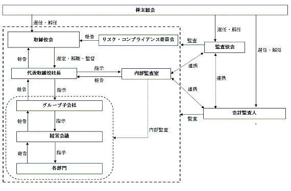

（注）提出日現在発行数には、2024年４月１日からこの有価証券報告書提出日までの新株予約権の行使により発行された株式数は、含まれておりません。
※ 当事業年度の末日（2024年１月31日）における内容を記載しております。当事業年度の末日から提出日の前月末現在（2024年３月31日）にかけて変更された事項につきましては、提出日の前月末現在における内容を［ ］内に記載しており、その他の事項については当事業年度の末日における内容から変更はありません。
(注) １．2018年11月20日付で普通株式１株につき60株の割合で株式分割を行ったことに伴い、新株予約権の目的となる株式の数、新株予約権の行使時の払込金額、新株予約権の行使により株式を発行する場合の株式の発行価格及び資本組入額を調整しております。
２. 新株予約権１個につき目的となる株式数は、60株であります。
ただし、新株予約権の割当日後、当社が株式分割、株式併合を行う場合は、次の算式により付与株式数を調整、調整の結果生じる１株未満の端数は、これを切り捨てます。
調整後付与株式数＝調整前付与株式数×分割・併合の比率
３．新株予約権の割当日後、当社が株式分割、株式併合を行う場合は、次の算式により行使価額を調整し、調整により生ずる１円未満の端数は切り上げます。
また、新株予約権の割当日後に時価を下回る価額で新株の発行または自己株式の処分を行う場合（新株予約権の行使に基づく新株の発行及び自己株式の処分並びに株式交換による自己株式の移転の場合を除く。）、次の算式により行使価額を調整し、調整による１円未満の端数は切り上げます。
４．新株予約権の行使の条件
① 新株予約権者は、新株予約権の権利行使時においても、当社または当社関係会社の取締役、監査役または使用人であることを要する。ただし、任期満了による退任、定年退職、その他正当な理由があると取締役会が認めた場合は、この限りではありません。
② 新株予約権者の相続人による本新株予約権の行使は認めません。
③ 本新株予約権の行使によって、当社の発行済株式総数が当該時点における授権株式数を超過することとなるときは、当該本新株予約権の行使を行うことはできません。
④ 各本新株予約権１個未満の行使を行うことはできません。
⑤ 新株予約権者は、当社の普通株式が日本国内の証券取引所に新規株式公開される日（以下、「上場日」という）後、次の各号に掲げる期間（ただし、新株予約権の行使期間中に限る）、本新株予約権をすでに行使した本新株予約権を含めて、当該各号に掲げる割合の限度において行使することができます（この場合において、かかる割合に基づき算出される行使可能な本新株予約権の個数につき、１個未満の端数が生ずる場合には、かかる端数を切り捨てた個数の本新株予約権についてのみ行使することができるものとします）。ただし、当社取締役会の承認を得た場合はこの限りではありません。
イ：上場日から１年間
当該新株予約権者が割当を受けた本新株予約権の総数の３分の１
ロ：上場日から１年を経過した日から１年間
当該新株予約権者が割当を受けた本新株予約権の総数の３分の２
ハ：上場日から２年を経過した日から行使期間の末日まで
当該新株予約権者が割当を受けた本新株予約権の総数のすべて
５．新株予約権の取得に関する事項
① 当社が消滅会社となる合併契約、当社が分割会社となる会社分割についての分割契約もしくは分割計画、または当社が完全子会社となる株式交換契約もしくは株式移転計画について株主総会の承認（株主総会の承認を要しない場合には取締役会決議）がなされた場合は、当社は、当社取締役会が別途定める日の到来をもって、本新株予約権の全部を無償で取得することができます。
② 新株予約権者が権利行使をする前に、上記４.に定める規定により本新株予約権の行使ができなくなった場合は、当社は新株予約権を無償で取得することができます。
６．組織再編行為に伴う新株予約権の交付に関する事項
当社が、合併（当社が合併により消滅する場合に限る。）、吸収分割、新設分割、株式交換または株式移転（以上を総称して以下、「組織再編行為」という。）を行う場合において、組織再編行為の効力発生日に残存する新株予約権（以下、「残存新株予約権」という。）の新株予約権者に対し、それぞれの場合につき、会社法第236条第１項第８号イからホまでに掲げる株式会社（以下、「再編対象会社」という。）の新株予約権を以下の条件に基づきそれぞれ交付することとします。
この場合においては、残存新株予約権は消滅し、再編対象会社は新たに新株予約権を発行するものとする。ただし、以下の条件に沿って再編対象会社の新株予約権を交付する旨を、吸収合併契約、新設合併契約、吸収分割契約、新設分割計画、株式交換契約または株式移転計画において定めた場合に限るものとします。
① 交付する再編対象会社の新株予約権の数
新株予約権者が保有する新株予約権の数と同一の数をそれぞれ交付します。
② 新株予約権の目的である再編対象会社の株式の種類
再編対象会社の普通株式とします。
③ 新株予約権の目的である再編対象会社の株式の数
組織再編行為の条件を勘案のうえ、上記２．に準じて決定します。
④ 新株予約権の行使に際して出資される財産の価額
交付される各新株予約権の行使に際して出資される財産の価額は、組織再編行為の条件等を勘案のうえ、上記３．で定められる行使価額を調整して得られる再編後行使価額に、上記③に従って決定される当該新株予約権の目的である再編対象会社の株式の数を乗じた額とします。
⑤ 新株予約権を行使することができる期間
新株予約権の行使期間に定める行使期間の初日と組織再編行為の効力発生日のうち、いずれか遅い日から新株予約権の行使期間に定める行使期間の末日までとします。
⑥ 新株予約権の行使により株式を発行する場合における増加する資本金及び資本準備金に関する事項
新株予約権の行使により株式を発行する場合の株式の発行価格及び資本組入額に準じて決定します。
⑦ 譲渡による新株予約権の取得の制限
譲渡による取得の制限については、再編対象会社の取締役会の決議による承認を要するものとします。
⑧ その他新株予約権の行使の条件
上記４．に準じて決定します。
⑨ 新株予約権の取得事由及び条件
上記５．に準じて決定します。
⑩ その他の条件については、再編対象会社の条件に準じて決定します。
※ 当事業年度の末日（2024年１月31日）における内容を記載しております。当事業年度の末日から提出日の前月末現在（2024年３月31日）にかけて変更された事項につきましては、提出日の前月末現在における内容を［ ］内に記載しており、その他の事項については当事業年度の末日における内容から変更はありません。
(注) １. 新株予約権１個につき目的となる株式数は、100株であります。
ただし、新株予約権の割当日後、当社が株式分割、株式併合を行う場合は、次の算式により付与株式数を調整、調整の結果生じる１株未満の端数は、これを切り捨てます。
調整後付与株式数＝調整前付与株式数×分割・併合の比率
２．新株予約権の行使の条件
① 新株予約権者は、新株予約権の権利行使時においても、当社または当社関係会社の取締役、監査役または使用人であることを要する。ただし、任期満了による退任、定年退職、その他正当な理由があると取締役会が認めた場合は、この限りではありません。
② 新株予約権者の相続人による本新株予約権の行使は認めません。
③ 新株予約権者は、次の区分に従って、割り当てられた新株予約権の一部または全部を行使できるものとします。なお、算出された行使可能な新株予約権の個数について１個未満の端数が生じる場合には、かかる端数を切り捨てた個数の新株予約権についてのみ行使することができるものとします。ただし、割り当てられた新株予約権の個数が１個である場合は当該期間にすべて行使することができます。
イ：2022年８月18日から2023年８月17日
当該新株予約権者が割当を受けた本新株予約権の総数の２分の１
ロ：2023年８月18日から2037年８月17日
当該新株予約権者が割当を受けた本新株予約権の総数のすべて
３．新株予約権の取得に関する事項
① 当社が消滅会社となる合併契約、当社が分割会社となる会社分割についての分割契約もしくは分割計画、または当社が完全子会社となる株式交換契約もしくは株式移転計画について株主総会の承認（株主総会の承認を要しない場合には取締役会決議）がなされた場合は、当社は、当社取締役会が別途定める日の到来をもって、本新株予約権の全部を無償で取得することができます。
② 新株予約権者が権利行使をする前に、上記２.に定める規定により本新株予約権の行使ができなくなった場合は、当社は新株予約権を無償で取得することができます。
４．組織再編行為に伴う新株予約権の交付に関する事項
当社が、合併（当社が合併により消滅する場合に限る。）、吸収分割、新設分割、株式交換または株式移転（以上を総称して以下、「組織再編行為」という。）を行う場合において、組織再編行為の効力発生日に残存する新株予約権（以下、「残存新株予約権」という。）の新株予約権者に対し、それぞれの場合につき、会社法第236条第１項第８号イからホまでに掲げる株式会社（以下、「再編対象会社」という。）の新株予約権を以下の条件に基づきそれぞれ交付することとします。
この場合においては、残存新株予約権は消滅し、再編対象会社は新たに新株予約権を発行するものとする。ただし、以下の条件に沿って再編対象会社の新株予約権を交付する旨を、吸収合併契約、新設合併契約、吸収分割契約、新設分割計画、株式交換契約または株式移転計画において定めた場合に限るものとします。
① 交付する再編対象会社の新株予約権の数
新株予約権者が保有する新株予約権の数と同一の数をそれぞれ交付します。
② 新株予約権の目的である再編対象会社の株式の種類
再編対象会社の普通株式とします。
③ 新株予約権の目的である再編対象会社の株式の数
組織再編行為の条件を勘案のうえ、上記１．に準じて決定します。
④ 新株予約権の行使に際して出資される財産の価額
交付される各新株予約権の行使に際して出資される財産の価額は、組織再編行為の条件等を勘案のうえ、上記③に従って決定される当該新株予約権の目的である再編対象会社の株式の数を乗じた額とします。
⑤ 新株予約権を行使することができる期間
新株予約権の行使期間に定める行使期間の初日と組織再編行為の効力発生日のうち、いずれか遅い日から新株予約権の行使期間に定める行使期間の末日までとします。
⑥ 新株予約権の行使により株式を発行する場合における増加する資本金及び資本準備金に関する事項
新株予約権の行使により株式を発行する場合の株式の発行価格及び資本組入額に準じて決定します。
⑦ 譲渡による新株予約権の取得の制限
譲渡による取得の制限については、再編対象会社の取締役会の決議による承認を要するものとします。
⑧ その他新株予約権の行使の条件
上記２．に準じて決定します。
⑨ 新株予約権の取得事由及び条件
上記３．に準じて決定します。
⑩ その他の条件については、再編対象会社の条件に準じて決定します。
該当事項はありません。
③ 【その他の新株予約権等の状況】
該当事項はありません。
該当事項はありません。
(注) １．新株予約権（ストック・オプション）の行使によるものであります。
２．有償一般募集（ブックビルディング方式による募集）
発行価格 3,273円
引受価額 3,068.40円
資本組入額 1,534.20円
３．有償一般募集（オーバーアロットメントによる売出しに関連した第三者割当増資）
割当価格 3,068.40円
資本組入額 1,534.20円
割当先 みずほ証券株式会社
（注）自己株式248株は、「個人その他」に２単元、「単元未満株式の状況」に48株含まれております。
2024年１月31日現在
（注）「単元未満株式」欄には、当社所有の自己株式48株が含まれております。
（注）上記以外に、自己名義所有の単元未満株式48株を保有しております。
１．従業員株式所有制度の概要
当社は、従業員の福利厚生の充実、及び従業員の財産形成の一助を目的とし、「NATTY SWANKY従業員持株会」を導入しております。当該制度では、会員となった従業員からの拠出金（毎月、１口1,000円とし、最高50口（50,000円））及び拠出金に対する当社からの一定（10％）の奨励金を原資として、定期的に市場から当社株式の買付けを行っております。
２．役員・従業員等持株会に取得させ、又は売り付ける予定の株式の総数又は総額
特段の定めは設けておりません。
３．役員・従業員株式所有制度による受益権その他の権利を受けることができる者の範囲
当社の従業員に限定しております。
該当事項はありません。
該当事項はありません。
該当事項はありません。
(注) 当期間における保有自己株式数には、2024年４月１日から有価証券報告書提出日までの単元未満株式の買取りによる株式数は含めておりません。
当社は、長期的に安定した事業の継続に備えるために、内部留保の充実を図るとともに、株主への利益還元を行うことも重要な経営課題の一つと考えております。
そのため、当事業年度におきまして、剰余金の配当を実施することを決定いたしました。今後の剰余金の配当は中間及び期末配当の年２回を基本的な方針としております。配当の決定機関は、中間配当は取締役会、期末配当は株主総会であります。
内部留保につきましては、経営基盤の安定に向けた財務体質の強化及び事業の拡大のための資金として有効に活用していく方針であります。
なお、当社は「取締役会の決議により、毎年７月末日を基準日として、中間配当をすることができる。」旨を定款に定めております。
（注）基準日が当事業年度に属する剰余金の配当は、以下のとおりであります。
当社グループは、株主、お客様、従業員、地域社会及びその他のステークホルダーからの信頼に応え、企業価値を継続的に向上させるためには、コーポレート・ガバナンスの強化が重要であると認識しております。今後とも法令遵守の徹底、経営における公正性と透明性の確保、迅速な意思決定の確保及び経営の監督機能の強化等に取り組んでおります。
当社は、会社法に基づく機関として、株主総会、取締役会及び監査役会を設置しております。
当社は、取締役による迅速かつ適切な経営上の意思決定を行うとともに、監査役による中立的な監査のもと経営の公正性と透明性を確立することにより、効率的な経営システムと経営監視機能が十分に機能する体制が整備されているものと判断し、現在の体制を採用しております。
a. 取締役会
取締役会は、代表取締役社長井石裕二、田中竜也、金子正輝及び社外取締役杉本佳英の取締役４名により構成されております。
現在、定時取締役会を原則として毎月１回開催して業務執行上の重要な事項を決定するほか、機動的な意思決定を行うために、必要に応じて臨時取締役会を開催しております。
b. 監査役会
監査役会は、常勤監査役井上重平、社外監査役馬塲亮治及び廣瀬好伸の３名により構成されております。監査役会は、原則として毎月１回の定時監査役会の開催に加え、重要な事項等が発生した場合には必要に応じて臨時監査役会を開催しております。監査役は、取締役会、経営会議及びその他重要な会議に出席し、経営の意思決定の過程及び業務執行の状況を監督しております。このほか、内部監査担当者及び会計監査人と緊密な連携をとり、年度監査計画に基づいて監査を実施するとともに、必要に応じて役員及び従業員に対して報告を求め、監査等により発見された事項については、監査役会で協議し、指導しております。
c. 経営会議
経営会議は、代表取締役社長井石裕二、専務取締役金子正輝、オブザーバーとして常勤監査役井上重平、子会社取締役である伊藤慎一朗、福田亮介により構成されております。経営会議は、必要に応じて開催しており、新店舗の出店検討、ＦＣ加盟の他、その他重要な事項をタイムリーに検討し決定できるようにしております。
d. リスクコンプライアンス委員会
リスクコンプライアンス委員会は、代表取締役社長井石裕二を議長とし、取締役会長の田中竜也、専務取締役金子正輝と常勤監査役井上重平、内部監査担当者、各部長によって構成されております。原則、月１回開催しており、コンプライアンス体制の充実及びリスクマネジメントを実践しております。諸法令等に対する役職員の意識向上及び様々なリスクに対する対応策等について協議し、リスクマネジメント及びコンプライアンス遵守の強化を図っております。
当社における、コーポレート・ガバナンスの概略図は以下の通りです。

当社グループでは会社法及び会社法施行規則に基づき、業務の適正性を確保するため「内部統制に関わる基本方針」を定めております。当方針で定めた内容を具現化するために、職務権限規程・内部通報規程等の統制に関連する規則を定期的に見直すとともに、内部監査担当者や監査役を中心として内部統制システムの確立を図っております。
「内部統制に関わる基本方針」の概要は以下の通りです。
当社グループは、取締役及び使用人の職務の執行が法令及び定款に適合することを確保するために、企業理念・行動規範を定め、取締役会規程等の社内規程を制定し、それらが遵守されるように周知徹底を行っております。そして、コンプライアンスに対する意識を啓発するために、定期的に研修等を企画し実施しております。
さらに、不正行為等の早期発見と是正を目的として内部通報制度を設けており、通報窓口を社内及び社外に設置し、通報者の保護を明確にして運用しております。
取締役が会社の目的の範囲外の行為、法令及び定款に違反する行為をし、若しくはこれらの行為をするおそれがある場合には、監査役はその事実を指摘・勧告し、状況によっては当該取締役に対して行為の差止請求ができるものとしております。
取締役の職務の執行に係る情報は、文書管理規程等に基づいて適切に保存及び管理し、必要に応じて閲覧可能な状態を維持しております。
当社グループの損失の危険に対応するために、リスクコンプライアンス規程を制定し、各組織において継続的にリスクの発生の有無をチェックし、各組織の責任者はその状況を定期的に各取締役に報告しております。
そして、実際にリスクが発生した場合には、対策本部を設置し、迅速に対応することとしております。
④ 取締役会の活動状況
当事業年度において当社は取締役会を月18回開催しており、個々の取締役の出席状況については次のとおりであります。
（取締役会における具体的な内容）
取締役会においては、経営に関する重要な事項についての検討を行っております。具体的な検討内容は、組織の変更、出退店計画、会社の決算に関する事項、重要な規定に関する事項、その他取締役会で必要と認めた事項となります。
当社グループは、定時取締役会を原則として毎月１回開催して業務執行上の重要な事項を決定するほか、機動的な意思決定を行うために、必要に応じて臨時取締役会を開催しております。
また、職務権限規程に基づく権限の委譲により、迅速かつ効率的な意思決定が行われる体制を確保しております。
監査役がその職務を補助すべき使用人を置くことを求めた場合には、内部監査室又は管理部門所属の使用人を置くこととしております。
そして、監査役から監査業務における指示を受けた使用人は、その指示に関する限りにおいては、取締役の指揮命令を受けないものとしております。
監査役は、取締役及び使用人に対して、事業の報告を求め、重要な事項についての報告を受けることとしております。
また、取締役及び使用人は職務執行に関して法令及び定款に違反する、又は、その恐れがある事項を発見したときは、直ちに監査役に報告しなければならないものとしております。
当社グループは、内部通報者等が通報又は相談したことを理由として、通報者等に対して解雇その他いかなる不利益な取扱いもしないことを規定し周知徹底しております。
当社グループは、監査役がその職務執行のため必要と認める費用を会社に請求できることとし、監査役が費用の前払等を請求した場合には、当該監査役が職務執行に必要でないことを証明した場合を除き、これを拒むことができないものとしております。
監査役は、定期的に代表取締役社長と面談を行い、また必要に応じて内部監査室等との連携をとっております。
そして、取締役会その他重要な会議に出席し、必要があるときは意見を述べるものとしております。
当社グループは、財務報告の信頼性を確保するために、財務報告に係る内部統制の整備、運用を評価し、継続的な見直しを行っております。
当社グループは反社会的勢力との関係・取引等を一切行わず、不当要求を受けた場合には、毅然とした態度で組織的に対応するものとしております。
当社は、企業価値を向上させることが、結果として買収防衛にもつながるという基本的な考え方のもと、企業価値向上に注力しており、現時点で特別な防衛策は導入しておりません。
当社に対して買収提案があった場合、当社取締役会は、当社の支配権の所在を決定するのは株主であるとの認識のもと、適切な対応を行ってまいります。
当社の取締役は10名以内、監査役は５名以内とする旨を定款で定めております。
当社は、職務遂行にあたり期待される役割を十分に発揮できるようにするため、会社法第426条第１項の規定に基づき、取締役(取締役であった者を含む)及び監査役(監査役であった者を含む)の会社法第423条第１項の責任を法令の限度において、取締役会の決議によって免除することができる旨を定款に定めております。また、当社は、会社法第427条第１項の規定により、取締役(業務執行取締役等である者を除く。)及び監査役との間で、会社法第423条第１項に定める責任を法令が規定する額まで限定する契約を締結することができる旨を定款に定めております。なお、当該責任限定が認められるのは、当該取締役(業務執行取締役等である者を除く。)及び監査役が責任の原因となった職務の遂行について善意でかつ重大な過失がない場合に限られます。当社は、社外取締役及び監査役との間で当該責任限定契約を締結しております。
当社は会社法第430条の３第１項に規定する役員等賠償責任保険契約を保険会社との間で締結しております。当該保険は役員としての業務につき行った行為（不正行為含む）に起因して、保険期間中に株主や投資家、従業員又はその他第三者から損害賠償請求を提起された場合において、被保険者が損害賠償金・訴訟費用を負担することによって被る損害を填補することとしております。
当該役員等賠償責任保険契約の被保険者は当社取締役及び当社監査役であり、全ての被保険者について、その保険料を全額当社が負担しております。
取締役の選任は、株主総会において、議決権を行使することができる株主の議決権の３分の１以上を有する株主が出席し、その議決権の過半数をもって行う旨及び累積投票によらないものとする旨を定款に定めております。
当社は、株主への機動的な利益還元を行うため、会社法第454条第５項の規定により、取締役会の決議によって中間配当を実施することができる旨を定款に定めております。
g.自己株式の取得
機動的な資本政策の遂行を目的として、会社法第165条第２項の規定により、取締役会の決議によって自己株式を取得することのできる旨を定款に定めております。
当社は、株主総会の円滑な運営を行うことを目的として、会社法第309条第２項に定める決議は、議決権を行使することができる株主の議決権の３分の１以上を有する株主が出席し、出席した当該株主の議決権の３分の２以上にあたる多数をもって行う旨を定款に定めております。
① 役員一覧
男性
(注) １．取締役杉本佳英は、社外取締役であります。
２．監査役井上重平、監査役馬塲亮治及び監査役廣瀬好伸は、社外監査役であります。
３．2024年１月期に係る定時株主総会の時から2025年１月期に係る定時株主総会終結の時までであります。
４．2022年１月期に係る定時株主総会の時から2026年１月期に係る定時株主総会終結の時までであります。
５．代表取締役社長井石裕二並びに取締役会長田中竜也の所有株式数には、それぞれの資産管理会社であります株式会社ＢＯＲＡ並びに株式会社ＩＫＩが所有する株式数を含めております。
６. 所有株式数は、2024年１月31日現在の株主名簿に基づいて記載しております。
７．当社は、法令に定める監査役の員数を欠くことになる場合に備え、会社法第329条第３項に定める補欠監査役１名を選任しております。補欠監査役の略歴は次のとおりであります。
② 社外役員の状況
当社は社外取締役を１名、社外監査役を３名選任しております。
当社では、選任にあたり経歴や当社との関係を踏まえて、当社経営陣からの独立した立場での社外役員としての職務を遂行できる十分な独立性が確保できることを前提に判断しております。
社外取締役の杉本佳英氏は、弁護士の資格を有しており、法律面について豊富な知識と経験を有していることから、社外からの公正な視点は当社の経営に活かせると判断し、法律面に関しての助言を期待し、社外取締役に選任しております。
社外監査役（常勤）井上重平氏は、長年に渡り会社経営に携わり、経営リスク及び内部統制に関する多くの知見と経験を蓄積しており、コンプライアンス、リスク管理及び内部統制についての豊富な知識と経験を有していることから、コンプライアンス、リスク管理及び内部統制に関しての助言を期待し、社外監査役に選任しております。
社外監査役（非常勤）馬塲亮治氏は社会保険労務士の資格を有しており、労務及びコンプライアンス面について豊富な知識と経験を有していることから、労務管理面での助言を期待し、社外監査役に選任しております。
社外監査役（非常勤）廣瀬好伸氏は、公認会計士の資格を有しており、会計及びコンプライアンス面について豊富な知識と経験を有していることから、会計及びコンプライアンス面での助言を期待し、社外監査役に選任しております。
社外以外に取締役及び社外監査役と当社との間に人的関係、資本的関係、経済的取引関係、その他利害関係はありません。
当社は社外取締役及び社外監査役を選任するための独立性に関する基準または方針を定めておりませんが、会社法の社外取締役及び社外監査役の要件に加え、東京証券取引所が定めている独立役員の独立性に関する基準等を参考にして、コーポレート・ガバナンスの充実・向上に資する者を社外役員に選任しております。
社外取締役は、取締役会等の重要な会議に出席し、独立した立場から経営の意思決定の監督・監査を行っております。また、内部監査、監査役監査及び会計監査とも適宜連携し、社外の視点から助言を行っております。
社外監査役は、取締役会及び監査役会に出席し積極的に質疑及び意見表明を行っております。また、内部監査室と連携し、内部監査結果報告を受け、必要に応じて内容を協議し、重要事項については取締役会に問題提起し、改善を図ることができる体制をとっております。
(3) 【監査の状況】
ａ．監査役監査の組織及び人員
当社の監査役監査は、独立性の高い社外監査役３名（常勤監査役１名、非常勤監査役２名）での監査体制を採用しており、社会保険労務士や公認会計士としての専門性や元経営者としての豊富な経験を有している要員を配し、監査役会で策定された監査方針及び監査計画に基づき、当社の業務全般について常勤監査役を中心とした監査を実施しております。また、取締役会などの重要会議に出席し、意見を述べるほか、取締役からの聴取、重要な決裁書類の閲覧等を行うことにより、取締役の業務執行の状況を監査しております。そして、それらの結果を監査役会に報告することにより、内部統制の実効性を担保しております。
さらに、内部監査室・監査役・会計監査人による三様監査を実施し、適宜情報交換を図ることにより三者による効果的な監査の実現に努めております。
当事業年度において監査役会を12回開催しており、個々の監査役の出席状況については、次のとおりであります。
ｂ．常勤監査役の活動状況
当事業年度における常勤監査役の活動内容は以下のとおりであります。なお、常勤監査役が行った活動内容につきましては、その結果を非常勤監査役とも共有しております。
・取締役会などの重要会議への出席
・株主総会、取締役会での監査結果報告
・取締役との意見交換
・内部統制システム実施状況監査
・直営店舗往査（実地調査）
・会計監査人との意見交換、情報交換
・重要文書類の閲覧、確認
・四半期、期末監査
ｃ．監査役会の主な検討事項
監査役会における主な検討事項は、以下のとおりであります。
・取締役会等重要会議への出席
・業務・職務執行の適法性及び妥当性について監視・検証
・内部統制システムの整備・運用状況の確認・検証
・問題・不祥事事項の監視・検証
当社では、内部監査部門として代表取締役社長直轄の内部監査室を設置し、専任の１名が当社の業務の適正性や効率性について監査を行い、その結果を代表取締役社長に対して報告するとともに、業務の改善及び適切な運営に向けての具体的な助言や勧告を行っております。また、内部監査室は監査役や会計監査人とも密接な連携をとっており、監査役や会計監査人は、内部監査の状況を適時に把握できる体制になっております。
Mooreみらい監査法人
３年間
高砂 晋平
浅井 清澄
会計監査業務に係る補助者は、公認会計士５名、会計士試験合格者等２名であります。
監査役会は、監査品質や独立性、監査報酬の妥当性等を総合的に評価し、監査法人の選定を行っております。監査役会は、会計監査人が会社法第340条第１項各号に定める項目に該当すると認められた場合、その他監査品質や独立性等において適正でないと判断した場合には、会計監査人の解任又は不再任に関する議案を決定し、取締役会は当該決定に基づき、当該議案を株主総会に提出致します。
当連結会計年度の当社における非監査業務の内容は、新株式発行に係るコンフォートレター作成業務であります。
該当事項はありません。
c．その他の重要な監査証明業務に基づく報酬の内容
該当事項はありません。
当社の監査報酬の決定方針としましては、事業の規模、監査日数及び前事業年度の 監査報酬等を勘案したうえで決定しております。
監査役会は、日本監査役協会が公表する「会計監査人との連携に関する実務指針」を踏まえ、監査計画の内容、従前の職務執行状況や報酬見積りの算定根拠等を確認し、審議した結果、会計監査人の報酬等の額につき、会社法第399条第１項の同意を行っております。
(4) 【役員の報酬等】
a. 取締役報酬決定の基本方針
取締役会の決議により、当社の取締役報酬については、業務分掌の内容及び業績への貢献度など求められる能力及び責任に見合った水準を勘案し、役職別の固定額を決定しております。
b. 取締役及び監査役の報酬等についての株主総会の決議に関する事項
取締役の報酬限度額は、2017年９月28日開催の第16回定時株主総会において年額200,000千円以内と決議いただいております。当該株主総会終結時点の取締役の員数は４名（内、社外取締役は１名）であります。
監査役の報酬限度額は、2017年９月28日開催の第16回定時株主総会において年額50,000千円以内と決議いただいております。当該株主総会終結時点の監査役の員数は３名（内、社外監査役は３名）であります。
c. 取締役の個人別の報酬等の内容の決定に係る委任に関する事項
当社は、取締役の報酬は、株主総会で決議された報酬限度額の範囲内において、取締役会の決議により委任された代表取締役社長の井石裕二が決定することとしております。
取締役の個人別報酬額の決定を代表取締役社長に委任した理由は、業績動向を俯瞰しつつ、各取締役の業績貢献度も勘案して、各取締役の個別報酬額の決定を行うには代表取締役社長が最も適しているからです。
取締役会は、当該権限が適切に行使されるよう、独立社外取締役に取締役報酬に関する方針を説明し、意見を徴したうえで、決定することを取締役の報酬等の決定方針に定めており、当該決定方針に沿うものであると判断しております。
監査役の個人別報酬額は、株主総会で決議された報酬限度額の範囲内において、監査役の協議により決定することとしております。
（注）業績連動報酬及び退職慰労金について該当事項がありませんので記載を省略しております。
報酬等の総額が１億円以上である者が存在しないため、記載しておりません。
該当事項はありません。
(5) 【株式の保有状況】
①投資株式の区分の基準及び考え方
当社は、専ら株式の価値の変動又は配当の受領によって利益を得ることを目的とする株式を純投資目的である投資株式、それ以外の株式を純投資目的以外の目的である投資株式と考え、区分しております。
②保有目的が純投資目的以外の目的である投資株式
a. 保有方針及び保有の合理性を検証する方法並びに個別銘柄の保有の適否に関する取締役会等における検証の内容
純投資目的以外の目的である投資株式につきましては、保有先企業との良好な関係を構築し、事業の円滑な推進を図るために必要がある場合に取得・保有することとしております。保有の合理性については定期的に取締役会で検討し、合理性が認められない場合には各種状況を勘案しながら売却を進めます。
b. 銘柄数及び貸借対照表計上額
(当事業年度において株式数が増加した銘柄）
③保有目的が純投資目的である投資株式
該当事項はありません。